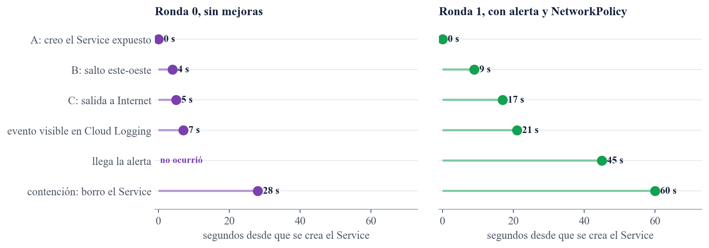
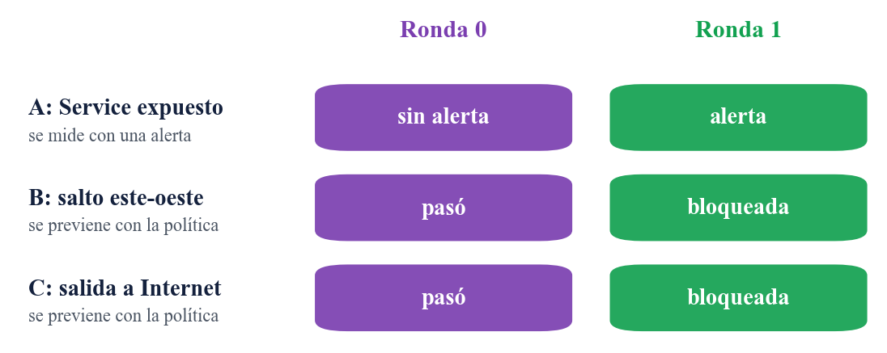
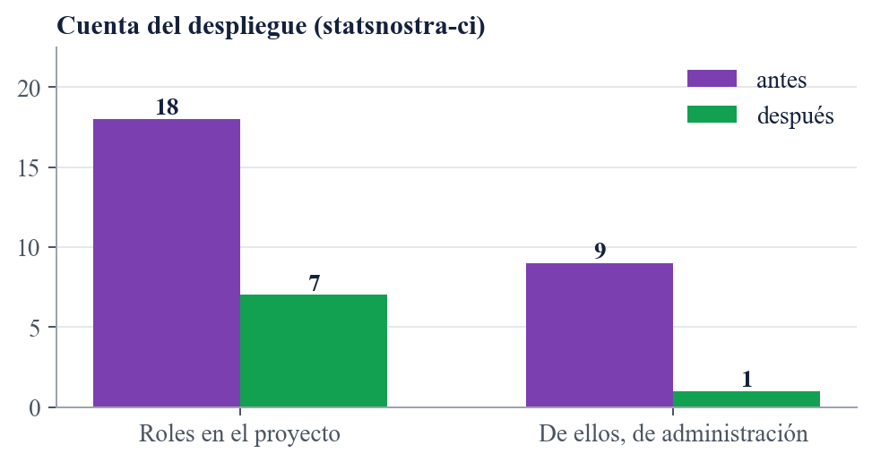

Experimento de caos de seguridad (defensa en profundidad) en GKE · 15 de noviembre de 2026
| Ronda 0, sin mejoras sin alerta El Service expuesto no avisó a nadie. El salto entre namespaces y la salida a Internet pasaron. |
Ronda 1, alerta y NetworkPolicy 45 s hasta la alerta; 15 s después se contuvo. Salto y salida, bloqueados. |
Credencial señuelo 27 s desde que alguien abre el secreto hasta que suena la alerta. |
Nos preguntamos qué pasa si aparece una ruta que nadie declaró dentro del clúster de StatsNostra, y cuánto tardamos en verla y cerrarla. Tal como estaba, no pasaba nada: ninguna regla miraba la creación de Services. Con una alerta basada en logs y una NetworkPolicy de denegación por defecto, el aviso llegó en 45 s y las otras dos rutas quedaron cerradas.
Tres rutas no declaradas, inyectadas a la vez: (A) un Service que expone el puerto de administración (el 9090 del Cloud SQL Auth Proxy), (B) un pod de otro namespace que llama a la API, y (C) un pod que sale a Internet sin filtro. Las dos últimas usan un pod de prueba en un namespace aparte (caos-seguridad).
Hipótesis de control. Con la red tal como está hoy, cuando se cree un Service que exponga el puerto de administración, esperamos una alerta en 5 minutos o menos y su eliminación en 10 minutos o menos.
| Regla de compromiso | Valor acordado por las tres APIs |
|---|---|
| Alcance | Solo cuentas y proyectos del grupo (aquí, el proyecto de Google Cloud de StatsNostra). Nada de terceros, de la Universidad ni de otros grupos. |
| Datos | Solo sintéticos. |
| Radio de impacto | Un Service de prueba, un namespace de prueba con un pod y una NetworkPolicy. No se tocan el Service público, el Deployment ni los pods de la API. Máximo 10 peticiones por prueba. |
| Parada y reversión | Tres comandos de kubectl que borran lo creado; se verifican con el estado de Services, políticas y /health/ready. La reversión se probó antes de la ronda 0. |
| Aborto | /health/ready sin responder 200 durante más de 60 s, falla del flujo completo, algo fuera del alcance, fin de la ventana, o cualquiera de las APIs pidiendo parar. |
| Bitácora | 27 acciones con hora, responsable y resultado en bitacora.md. |
El inventario de controles de StatsNostra cuenta 18 controles activos y 5 huecos abiertos en cinco capas; 4 de esos controles se activaron durante este trabajo. Los huecos de partida eran los que explican la ronda 0: no había NetworkPolicy, ni filtrado de salida, ni alerta sobre Services.
| Capa | Activos desde el inicio | Cerrados en este trabajo | Huecos abiertos |
|---|---|---|---|
| Identidad | 3 | 2 | 0 |
| Red | 4 | 0 | 2 |
| Carga de trabajo | 3 | 0 | 1 |
| Datos | 2 | 0 | 1 |
| Detección y respuesta | 2 | 2 | 1 |
Línea base de la señal: con un Service inofensivo, el evento de creación se pudo consultar en Cloud Logging a los 28 s. Es el piso de cualquier detección que se apoye en esos registros.
Las dos rondas se hicieron el domingo 15 de noviembre con la ventana acordada en el grupo. Cada una crea el Service a la vez que lanza B y C, mide cuándo se puede consultar el evento, espera la alerta y contiene.

| Hora (Colombia) | Ronda 0 | Resultado |
|---|---|---|
| 16:15:18 | empieza | preparado el namespace caos-seguridad y el pod visitante |
| 16:15:20 | inyección A: creo el Service admin-expuesto (NodePort 9090) | creado a las 2026-11-15T21:15:18Z |
| 16:15:22 | inyección B: visitante llama a la API desde otro namespace | HTTP 200 |
| 16:15:23 | inyección C: visitante sale a Internet (a la IP pública de la API) | HTTP 200 |
| 16:15:31 | pruebo el NodePort 32260 desde fuera de la red | HTTP 000 (000 = sin respuesta) |
| 16:15:39 | detección: la regla de Services expuestos coincide | a los 7 s de la creación |
| 16:15:45 | alerta: no hay política de alerta | no se esperó ninguna notificación |
| 16:15:46 | contención: borro el Service admin-expuesto | borrado a las 2026-11-15T21:15:46Z (28 s después de crearlo) |
| 16:15:48 | verifico el estado inicial | servicios, políticas y /health/ready en orden |
| Hora (Colombia) | Ronda 1 | Resultado |
|---|---|---|
| 16:25:08 | empieza | preparado el namespace caos-seguridad y el pod visitante |
| 16:25:10 | inyección A: creo el Service admin-expuesto (NodePort 9090) | creado a las 2026-11-15T21:25:08Z |
| 16:25:17 | inyección B: visitante llama a la API desde otro namespace | HTTP 000 |
| 16:25:25 | inyección C: visitante sale a Internet (a la IP pública de la API) | HTTP 000 |
| 16:25:33 | pruebo el NodePort 32502 desde fuera de la red | HTTP 000 (000 = sin respuesta) |
| 16:25:54 | detección: la regla de Services expuestos coincide | a los 21 s de la creación |
| 16:26:07 | alerta: llegó al tema de Pub/Sub | 2026-11-15T21:25:52.952Z |
| 16:26:08 | contención: borro el Service admin-expuesto | borrado a las 2026-11-15T21:26:08Z (60 s después de crearlo) |
| 16:26:11 | verifico el estado inicial | servicios, políticas y /health/ready en orden |
En la ronda 0 la contención a los 28 s la hizo quien operaba el experimento, que ya sabía del evento; no cuenta como MTTC porque nadie recibió una alerta.

| Ronda 0 | Ronda 1 | |
|---|---|---|
| MTTD (de la creación a la alerta) | no se detectó | 45 s |
| MTTC (de la alerta a la contención) | sin alerta no hubo quién contuviera | 15 s |
| Evento consultable en Cloud Logging | 7 s | 21 s |
| Cobertura de la alerta | 0 de 3 inyecciones | 1 de 3 (la A) |
| Falsos positivos | sin alerta que pudiera darlos | 0: la única alerta fue la del Service inyectado |
| Hipótesis (alerta en 5 min, contención en 10 min) | se refuta: no hay alerta | se cumple |
El NodePort quedó sin respuesta desde fuera de la red en las dos rondas, porque el firewall de la red del clúster solo deja pasar el puerto 80 al balanceador. La B y la C se cerraron con la política: la B falló ya en la resolución de nombres, así que para aislar la política de entrada de la API quitamos la del namespace de prueba y llamamos a la API por su ClusterIP; siguió bloqueada. Con las políticas puestas, el flujo completo por el coordinador siguió dando 200 y las dos réplicas quedaron listas.
| Mejora | Qué es |
|---|---|
| Alerta de Services expuestos | Política de Cloud Monitoring sobre el registro de auditoría de Kubernetes: avisa cuando se crea un Service NodePort o LoadBalancer distinto del público. La notificación llega a un tema de Pub/Sub, de donde se lee la hora real de la alerta. |
| NetworkPolicy | Denegación por defecto de entrada y salida, entrada a la API solo por su puerto, y salida solo a DNS, metadatos, la API de Cloud SQL (443) y la base (3307). Se aplicó en la ronda 1 y se revirtió al terminar. |
Las reglas son código versionado (seguridad/deteccion/reglas.py): de una sola definición salen el filtro de Cloud Logging y la evaluación de los casos de prueba. Hay 3 casos positivos y 9 negativos, que incluyen el flujo normal del despliegue, y corren con el resto de las pruebas en cada push.
Credencial señuelo. Un secreto que ninguna aplicación usa (statsnostra-admin-respaldo, con un valor sintético) y que dispara una alerta al abrirse. Para verlo hubo que habilitar los registros de lectura de datos de Secret Manager, que antes no estaban. Abrirlo avisó a los 27 s; mirar sus metadatos sin abrirlo no avisó. Referencias: MITRE D3FEND, técnica D3-DUC (Decoy User Credential), y ATT&CK T1552 (Unsecured Credentials), consultadas el 15 de noviembre de 2026; documentación de registros de auditoría de Secret Manager de Google Cloud, consultada el 15 de noviembre de 2026.
Identidades de máquina con mínimo privilegio. Se inventariaron las 3 cuentas de servicio del proyecto: ninguna tiene llaves creadas por el usuario. La cuenta que usa GitHub Actions para desplegar tenía 18 roles, 9 de ellos de administración, heredados de entregas anteriores. Se redujo a 7 roles (uno de administración, el de GKE) más permiso de lectura sobre un solo secreto, y cada operación del despliegue se probó suplantando a la cuenta antes de dar el cambio por bueno. Referencia: guía de prácticas recomendadas para cuentas de servicio de Google Cloud (privilegio mínimo y evitar las llaves de cuenta de servicio), consultada el 15 de noviembre de 2026.

La alerta cubre una de las tres rutas: la B y la C se previenen con la política, pero no dejan una señal propia. Habilitar los registros de lectura de datos agrega volumen de logs; si crece, hay que acotarlo. Los resultados vienen de una sola ejecución por ronda. La NetworkPolicy quedó revertida: hay que decidir si pasa a ser parte del despliegue, y eso reinicia pods. Y la cuenta del despliegue sigue con permisos de administración de GKE, porque el despliegue crea recursos de varios tipos.
Próximos experimentos: una alerta sobre los flujos denegados de la red para cubrir la B y la C, y dejar la NetworkPolicy en el despliegue con una prueba que verifique el flujo completo antes de fusionarla.
Cómo reproducir: seguridad/README.md. Las gráficas salen de seguridad/evidencia/ con seguridad/informe/dibujar.py.